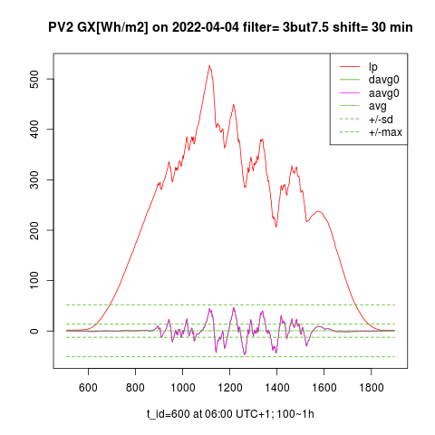
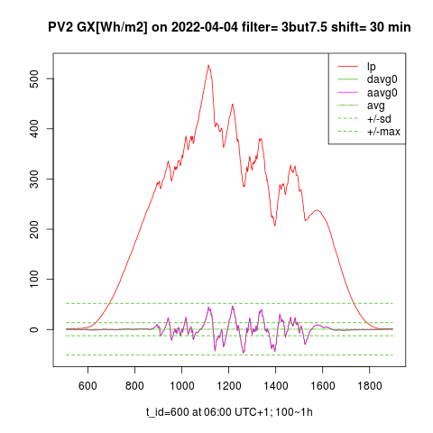

Photovoltaic intermittency and its smoothing potential
Impact of PV intermittency on grid
Intermittency of solar irradiance causes that time course of photovoltaic (PV) power generation is unstable over time. As the share of photovoltaic (PV) energy in the grid increases, the intermittency of solar power is posing still higher risk to power quality and grid's stability. To mitigate the temporary unbalance between PV infeed and power consumption, the grid operator sets PV generators off-grid (or at least to a low efficiency status) while the PV intermittency is high. The PV resources are not fully utilized, and they raise extra strain on the grid regulation. This impact is expressed e.g. by the last guaranteed feed-in tariff for new PV installations in Germany: In 2020, a new feed-in tariff was only about 1/3 of the purchase tariff. The state guarantee has been canceled as of 2021, and there is no more doubt that only technical innovations can further boost the share of PV energy in the grid: Smoothing of PV power could eliminate the losses of intermitent PV energy (7% in Arizona 2011), and adequately reduce additional grid control costs induced by the intermittent PV generators. On the other hand, the loss-free PV smoothing takes up an expensive accumulation capacity otherwise used for energy storage.
We analyzed and optimized methods for the efficient and affordable smoothing of PV power on days with strong solar intermittency.
Measurement of PV Power
Accurate photovoltaic measurement is a prerequisite for PV smoothing:
- Accurate short-term forecasting (nowcasting) of PV power is crucial to minimize the accumulation of energy by the smoothing. PV power predictors have to be continuously trained by the sky-imagery and by the signal GI(t), in particular by its fraction intercepted by a tilted PV panel.
- By means of the measured signal GI(t), we can "ex-post" excite a low-pass filter by a "predicted" input signal GIf(t+Δt), as if its GIf values were biased by a prediction error simulated to reproduce the operation of a real predictor. Given the prediction error and the desired quality of "smoothed" PV power, the accumulated energy by the filter has to be minimized. Thus, we have optimized the low-pass filter model (patent pending), minimizing the accumulation and costs of PV smoothing.
- However low is the accumulated energy, the PV smoothing is not for free. It can pay off only if a favourable "smooth feed-in tariff" exists. Ramping limits of the smooth PV infeed should be specified by a technical standard (which currently does not exist). Once the prediction error is known and the filter model is optimized, the real smoothing costs can be calculated by means of the measured GI signal. Hence a trade-off between the smoothing costs and the smoothing quality, defining the corresponding reduction in grid control costs, can be optimized. This is, how the relevant technical standard and the corresponding feed-in tariff can be matched together.
Measurement of solar irradiance for the sake of PV smoothing must meet the folloowing demands:
- Capture the full spectrum of solar intermittency with sufficient sampling frequency
- Replicate the physical properties of planar silicon photovoltaic panels
- Measure only that fraction of incident radiation, which is intercepted by a tilted PV panel.

Actually, the momentary solar irradiance has to be measured at any plane of incidence under given atmospheric conditions. Fulfilling all of these demands is not possible only by measuring the global (GHI) and diffused (dHI) horizontal irradiance (both of which are regularly measured by national weather services).
A corresponding measurement system and data logger have been developed and is in operation since 04/2021 at the author's site (48.2°, 17.1°).
The system consists of 2 units:
- external console having 4 reference PV panels fixed in different angles, and temperature sensors sticked to the panels,
- internal measurement unit, serving as a MPPT controller, battery charger, heat sink, A/D converter, and data logger.
Here are the main system highlights:
- Four monocrystaline PV panels (sensors) are mounted at different angles. The panels are calibrated by means of Ineichen’s clear-sky model, having its Linke-turbidity factor calibrated by the reference GHI, dHI measured at the near meteorological site. The PV panels are re-calibrated once a year.
- Temperature sensors are fixed onto each PV panel. The panels are always operated at maximum output power (MPPT). Their operating point is dynamically adjusted according to the temperature drift of their A-V characteristics and internal resistance. The measured output power of each panel is then divided by its active surface area and by its (known) efficiency at given surface temperature. The measurement is finally expressed as "photovoltaic global irradiance" in W/m2 analogous to GI measured at given angle of the plane of incidence, but taking into account the spectral and optical properties of PV panels.
- Data logger operates with a dynamic sampling frequency. This captures the whole spectrum of solar intermittency, but eliminates redundancy in the stored data. The sampling period ranges from 0.5 second to 10 minutes, according to the solar intermittency. Several years of such a irregular time series can be stored in a relational database with tablespace <1TB.
- The off-grid measurement system is self-powered 24 hours x 7 days a week. Except the measurement, the PV sensors supply power to the data logger and charge its backup accumulator. The system requires a minimum maintenance.

- Simultaneous measurement of GI in 4 fixed normal angles allows an accurate interpolation of GI at any plane of incidence pointing with its normal vector among the 4 fixed normal vectors (intra-normal area).
Daily profiles (12 h) of photovoltaic GI [W/m2] measured at 4 fixed planes, where GHI corresponds to the horizontal plane and extrapolated GNI corresponds to the virtually solar-tracked plane of incidence. Its normal vector points to the extra-normal area in winter while the solar elevation is lower than the elevation of the 4 fixed normal vectors. The approximated GNI is therefore less accurate in winter.

Daily temperature profiles (24 h) at PV surfaces, and the ambient temperature. The PV surface temperature is affected by the ambient temperature, solar irradiance (infrared spectrum), and by the wind. The ambient temperature is higher than the sky temperature in the night when the PV panels are cooled by their own radiation.
.
.
.
Smoothing of PV Power
Energy balancing between the grid and the battery may eliminate the PV intermittency almost loss-free. The objective of a loss-free smoothing is to meet the maximum allowed ramping limits of PV power (relevant technical standard is expected here) while accumulating the minimum possible energy by the filter. If the smooth PV power is generated by a low-pass filter (LPF) excited by the output of PV panels, such a power filter induces high accumulation costs due to a time lag (group delay) in its response. The time lag could be eliminated, if LPF was excited by the future PV power signal. Unfortunately, the short-time PV prediction (nowcasting) is not exact and its error dramatically increases the accumulated energy by the predictive low-pass filter (PLPF, see schema below). Recently, various smart filtering techniques (e.g. moving average, moving median, Kalman filter etc.) have been developed to avoid the accumulation of energy due to the LPF time lag and due to the nowcasting error. Nevertheless, the accumulation and its costs induced by these non-standard filters still exceed the production cost of e.g. nuclear electricity.
Below we analyse the smoothing of PV power by means of standard LPF:

In the schematic diagram, a PV power plant (PVPP) is connected to the grid and its intermittent PV power p(t) is accumulated or compensated (i.e. smoothed) by an accumulator (BESS). The smoothing power is actuated by a two-way inverter AC/DC and it is given by the ouput signal p(t)-s(t+Δt) of a differencer. Positive sign of the smoothing power is oriented from the grid to BESS. Hence total power superimposed to the grid by PVPP and BESS is determined by the filter’s output signal s(t+Δt).
-
In case of LPF smoothing, the measured signal p(t) would bypass predictor, directly exciting LPF.
-
In theory, the ideal predictive smoothing IPLPF would excite LPF by the exact future PV power signal p(t+Δt) where the time advance Δt is absolutely equal to the LPF's group delay at frequencies f<<fc, and fc is the cut-off frequency of LPF. Hence the smooth power signal s(t+Δt) would be the response of LPF to the input signal p(t+Δt). on BESS
-
According to the schematic diagram, PLPF smoothing method excites LPF by a predicted PV power signal pf(t+Δt).
-
Eventually, a novel smoothing method SPLPF has been designed, exciting the filter by a real predictor like PLPF does, though SPLPF has another schematic diagram.
Accumulated energy by smoothing
For the simplification of our analysis, PVPP and BESS are single-phase-connected to the grid, and energy losses by the AC/DC conversion and by the accumulation are neglected.
Time course of the accumulated energy by BESS:
defines the change of its state-of-charge SOC [Wh] since time=0 until time=t, while SOC may acquire both positive and negative values. The time advance Δt reduces absolute values of the integrated function. Always-positive SOC values can be technically achieved if BESS consists of two separate batteries. The above-defined time advance Δt ensures that following technical criteria are satisfied:
Mean value of SOC is near to zero:
Mean quadratic deviation of SOC is near to minimum:
Hence near-to-minimum required accumulaton capacity per cycle:
and near-to-minimum throughput of accumulated energy per cycle:
The rate of accumulation is expressed by (4) and (5) which are minimized by Δt during a working cycle T = 24 hours (in case of PV energy). The rate of accumulation is also expressed by the power demand during a solar gap. This results from the installed power of PVPP.
Let us assume that PV power is proportional to the global solar irradiance GI [W/m2]. In our experiment, the solar irradiance is intercepted by a plane 20cm x 16cm on the earth’s surface at latitude=48°, longitude=17°, and the plane of incidence is elevated by 47° to the south. Based on the proportionality between the PV power p(t) and the measured GI(t), we substitute the signals p(τ), s(τ+Δt) in (1) by the measured signal GI(t) and by its “predicted-and-smoothed” counterpart. After the substitution, the expression (1) computes the time course of specific accumulated energy GX(t) [Wh/m2] by the filter.
Ideal smoothing of PV power (IPLPF)
We simulated the operation of ideal predictive PV smoothing (IPLPF) by means of LPF excited by the exact future signal GI(t+Δt) where GI(t) is measured and the time advance Δt (as defined above) eliminates the filter’s time lag. In theory, such a simulated "ex post" smoothing would minimize the accumulation of energy by the filter. Our analysis aims to establish the theoretical potential and affordability of PV smoothing. The numeric experiment is based on the measured solar irradiance over a period of 1 year, assuming contemporary prices of Lithium-Ion accumulators and EDLC supercapacitors.
The measured GI time series eventually allows to calculate the specific accumulator’s capacity [Wh/m2], its specific power [W/m2], specific energy throughput [Wh/m2/day], [Wh/m2/year] requested by the IPLPF smoothing. Based on the accumulators’ specifications and prices as of 2021, the corresponding accumulation costs have been calculated. The simulation proved that the IPLPF is definitely worthwhile with the German power purchase tariff and PV feed-in tariff in 2021. The ideal smoothing costs are substantially lower than the difference between purchase tariff and PV feed-in tariff (assuming that smooth PV infeed partially compensates for the distribution costs). The simulation suggests an affordable smoothing model for a hybrid small-scale PV plant, and foresees a future smoothing technology for large-scale PV plants.
Smoothing by IPLPF vs LPF
Global irradiance GI measured (legend meas), filtered GI and specific accumulated energy GX
by LPF (legend lp) and by IPLPF (legend aavg0). Measured @(48.2°N, 17.1°E) by a south-oriented PV panel elevated by 47°, calibrated and operated at the maximum power point of its V-A characteristics:
 

The left graph shows the measured and low-passed (legend “lp”) GI signals on a day with a high solar exposure and strong intermittency. The graph on the right shows the specific accumulated energy GX [Wh/m2] by IPLPF vs. LPF on the same day. The time course of GX is proportional to the battery's state of charge SOC [Wh]. Exactly-predicted input signal shifts the IPLPF output to the left (legend “aavg0”), minimizing the standard deviation of SOC, thus in practise minimizing the difference delta(SOC) = max(SOC) – min(SOC) which represents the necessary accumulation capacity. The throughput of accumulated energy (other than delta SOC) is also minimized by IPLPF.
Costs of IPLPF smoothing
The smoothing costs result from the energy accumulation. The accumulation costs are given by the accumulation rate and technology (e.g. Lithium battery, supercapacitor etc.). In theory, the accumulation rate is given by the intermittency of solar irradiance vs. desired time course of the output PV power. The accumulation rate is expressed by following parameters:
- maximum power [W] from/to BESS, balancing the intermittent PV power
- mandated BESS capacity, i.e. maximum delta SOC [Wh] reserved for smoothing
- total accumulated energy throughput [Wh] by smoothing
In practice, the parameters 2. and 3. are larger the more imperfectly the balancing power between the grid and the battery is controlled. In the illustrated example, IPLPF uses 24% delta SOC relative to LPF, and IPLPF accumulates about 50% of the energy throughput if compared to LPF. Both the accumulated SOC and energy throughput reach their theoretical minimum by means of IPLPF smoothing.
The higher LPF order or its lower cut-off frequency, the smoother output, but "earlier" input signal needed to eliminate the filter's time lag. (In case of PLPF smoothing: The greater Δt, the greater prediction error and the greater rate of accumulation.)
The IPLPF simulation has proven that hybrid PV systems, a small-scale on-grid PV plant having its own battery energy storage system BESS with capacity = 2 hours x Ppvmax, need <10% of their battery capacity to be reserved for smoothing (7% as shown by Illustration 2), while their rest BESS capacity is left for the energy storage. The hybrid PV plants feed their “overflow” power into the grid, as long as the household’s consumption is satisfied and the battery has been charged. With such a storage capacity and battery power, the IPLPF costs are reasonably lower than the expected added value to the smooth PV power infeed is.
IPLPF costs measured from 04/2021 to 03/2022. The plane of incidence and applied LPF are the same as on the graphs GI(t) and GX(t):

Measurement conditions:
CapEx of "Hybrid with BESS” system include 90% of the accu-capacity reserved for storage, 10% for smoothing.
Infeed to grid by "Hybrid with BESS” on-grid system: 1/3 of the generated PV energy is assumed as infeed to the grid (overflow).
Li-Ion & supercapacitor (SC): life cycle parameters and prices are as of 2021.
Hybrid supercapacitor (HSC): estimated price is based on the relation btw. Li-Ion and SC prices.
Cost calculation:
The costs are specific per 1 kW of installed PV power. Installed PV power = DC output power of PV plant (before DC/AC connversion) assuming its solar incidence 1kW/m2 (1 Sun).
CapEx = initial investment to PV smoothing. OpEx = regular (e.g. yearly) costs necessary for its uninterrupted function. The greater from (CapEx, interval * OpEx) defines the cost of PV smoothing for a given service interval. However, when the smoothing uses >1 accumulation technologies concurrently, the service interval has to be fixed before calculating OpEx. (Reason: Given the service interval, two technologies with different wear-outs can be optimally mixed.) Hybrid systems and sole PV plants use different cost models, because the sole PV plant uses a mixed accumulation technology for smoothing. Energy losses due to the AC/DC conversion and accumulation were neglected.
Applications of IPLPF
Small-scale hybrid PV system configuration: Installed PV power <10kW connected to the low-voltage grid, installed BESS with energy capacity ≈ 2h x installed power [W]. After charging the BESS to its threshold SOC (e.g. 90%), the BESS can smooth the PV infeed (overflow) to the grid for affordable costs, if the rest of BESS capacity is left free for IPLPF operation, and its full power is available for smoothing (additional technical measures are needed to avoid its microcycling). The power intermittency of small scale PV plants has no impact on the grid, unless their penetration in the grid is high. IPLPF technology offers an affordable smoothing of PV power in the grid areas with high penetration of small-scale hybrid PV systems.
Lithium accumulators are cheap, efficient and fast, but not enough powerful for a sole IPLPF smoothing. It is not recommended to charge/draw a Li-Ion battery with relative power (PPVmax x 1h)/SOCmax >> 1, otherwise the battery’s life cycle would be curtailed. It is cheaper to oversize its SOC capacity appropriately, than to overload it by too much power.
Large-scale PV plant without BESS: Installed power >100 kW is connected to the grid on a middle- or high-voltage level. Water pumps provide efficient storage for large scale PV plants (cheaper and cleaner than corresponding BESS would provide), but no power smoothing because the water pumps are too sluggish for such a task. Large-scale PV intermittency can be “smoothed” bywith a reasonably low SOC capacity driven by IPLPF technology. A solely smoothing battery with a relatively low capacity delta(SOC) would have to provide a high relative power ≈10C. Such a high power can be provided by EDLC supercapacitors (SC), but on contrary, these still do not provide enough cheap capacity to satisfy the IPLPF smoothing. Currently there is a lack of accumulation technology suitable for smoothing the large-scale PV plants.
IPLPF smoothing with hybrid supercapacitors (future):
Since the IPLPF smoothing shrinks the necessary delta(SOC) and total throughput to their theoretical minimum, by contrast it increases the relative smoothing power, as no algorithm can supply the missing PV power when the direct Sun beams are covered by clouds. The measured signal GI(t) defines specific accumulation parameters GXmax [Wh/m^2] and GImax [W/m^2] needed by the IPLPF smoothing. Their values lay somewhere between those values provided by the RedOx Li-Ion and EDLC supercap technologies. We have optimized the IPLPF smoothing of the large-scale sole PV plant by mixing both SC and HSC technologies to concurrently operate during 15 years of service. The future HSC technology is already being developed: hybrid supercapacitor, combining advantages of EDLC & RedOx technologies.
IPLPF summary
Our measurement has proved, that ideal PV smoothing can be affordable with the current Lithium-Ion technology - if properly implemented into a hybrid PV plant (incl. measures against micro-cycling of battery). Although the HSC technology is yet unavailable, the intensive seek for energy makes it very likely to be soon mature as well for large-scale PV plants. Low accumulation rate by the IPLPF smoothing should motivate the further development of technologies among which the accurate nowcasting of PV power and the smart filtering of PV power are crucial.
Real smoothing of PV power
The measured global irradiance signal GI(t) allows not only the simulation of ideal predictive low-pass smoothing (IPLPF), but also allows for the predictive smoothing of PV power (PLPF), exciting a low-pass filter (LPF) by a real predicted signal GIf(t+Δt). The values GIf are biased by a prediction error. As we will show, this error induces a significant accumulation of energy by PLPF, if compared to IPLPF. We simulated the prediction error to the measured GI signal in order to statistically represent the real predicted signal GIf(t+Δt). Based on the measured time series GI(t), the "ex-post" simulation of PLPF allowed us to empirically analyze its smoothing performance and energy accumulation.
In addition to PLPF, we have developed a “smart predictive low-pass smoothing” method (patent pending SPLPF), minimizing the accumulated energy with respect to the real-predicted values GIf exciting the LPF. Finally, we have analysed the performance of four different PV smoothing methods:
- LPF: Input of LPF is excited by the measured signal GI(t)
- IPLPF: Input of LPF is excited by the measured, optimally left-shifted signal GI(t+Δt)
- PLPF: Input of LPF is excited by the simulated-predicted signal GIf(t+Δt)
- SPLPF: Power filter is excited by the simulated-predicted signal GIf.
Simulation of predicted PV power
We simulated the predicted signal GIf(t+Δt) from the measured, left-shifted GI signal by interval Δt, by smoothing its future portion and by superimposing a random error to its values with respect to the fundamental properties of PV predictors:
- as the advance Δt increases, the (unwanted) smoothing of the predicted signal GIF strengthens,
- as the advance Δt increases, the impact of random error on GIF increases (statistically cumulates).
Both errors are applied at the "future" time t+Δt, whereas Δt depends on the requested smoothing quality and LPF order. In the simulation, we control the prediction error by 2 quantitative (OLAP) dimensions:
- Interval of prediction, after which the smoothing impact on the predicted signal is strengthened, is defined by the parameter smooth_int [minute]. The shorter this interval, the steeper the effect of smoothing rises towards future.
- Standard deviation of the random prediction error (dimensionless parameter SE). A new random value is repeatedly superimposed to the future GI signal each time after passing a 6-minute interval of prediction. This assures that the random error statistically cumulates.
GI predictors with two different accuracies have been simulated:
- “Better prediction accuracy”: smooth_int = 6 minutes, SE = 0.05
- "Worse prediction accuracy": smooth_int = 3 minutets, SE = 0.1.
For each method, the quality of PV power smoothing and the rate of energy accumulation were analysed by the LPF of orders 1 to 4. Filters of different orders were tuned in order to generate PV power of an equivalent smoothing quality, provided that the filters of different orders are excited by the measured, optimally shifted input signal (as in IPLPF case). By adhering this tuning rule, increasing of the filter order increases its cut-off frequency, while the optimal advance Δt increases only slightly.
The smoothing of PV power during a day with strong solar intermittency was analysed by the following 4 methods:
The smoothing of PV power by the above-listed methods is numerically analysed and graphically displayed. The prediction error (Figure 2, Figure 6) empirically exhibits the following dependencies along the partial OLAP dimensions:
Smoothing analyzed by prediction error
Smoothing of the predicted signal:
- Changing the value of smooth_int affects the power smoothing quality neither by SPLPF nor by PLPF method, wile for all parameter values, the SPLPF method provides worse smoothing than the PLPF method (Figure 3, Figure 4, Figure 7, Figure 8).
- Lowering the value of smooth_int dramatically increases the accumulation rate by the PLPF method, which is always much larger than by SPLPF method (Figure 5, Figure 9). For some parameter values, the PLPF method even exceeds the accumulation rate induced by the LPF method (Figure 9). In the SPLPF method, the accumulation rate increases only slightly and much more slowly than in the PLPF method.
Random error of prediction:
- Increasing of SE parameter does not degrade the smoothing quality by the PLPF method, but it does degrade the smoothing by the SPLPF method (check Figure 7 vs Figure 8), in which the smoothing performance with standard error SE > 0 is always worse than in the PLPF method.
- Increasing the value of SE parameter significantly increases the accumulation rate by the PLPF method (Figure 5, Figure 9), which is for all values SE > 0 much higher than by the SPLPF method. For some SE values, the PLPF method even exceeds the LPF method in its accumulation rate. The accumulation rate increases only slightly in the SPLPF method, and less so the higher the filter order.
Smoothing analyzed by LPF order
Filter order is the third OLAP dimension, impact of which was analysed together with the prediction error. We analysed the LPF orders 1 to 4:
- Filter order does not affect the smoothing quality of PLPF method and for small filter orders, the smoothing quality of PLPF is better than that of SPLPF.
- Increasing of the filter order improves the smoothing quality of SPLPF method, which becomes technically equivalent with PLPF from the 4th order onwards.
- Increasing of the filter order only slightly reduces the accumulation rate by the PLPF method. The accumulation rate by PLPF is always substantially larger than by SPLPF.
- Increasing of the filter order appreciably reduces the accumulation rate by the SPLPF method. By increasing the filter order with a relatively small prediction error, SPLPF gradually converges to the accumulation rate induced by the IPLPF method.
The signal GI(t) is graphically displayed as measured, predicted, and smoothed by 4 different smoothing methods. Finally, a per-day time course of the specific accumulated energy GX [Wh/m2] is displayed, corresponding to the corresponding smoothing method. Performance of the 3rd-order low-pass filter is displayed by the graphs. Two days with strong solar intermittency have been selected for the simulation: A day with the medium solar exposure 3.0 kWh/m2, and a day with the high solar exposure 5.9 kWh/m2. (GI was measured at the above-specified plane of incidence.) Advance Δt = 30 minutes was applied in order to achieve a desired smoothing effect on both selected days. The accumulation rate by the 4 different smoothing methods was calculated, based on the measured GI(t) signal. The results are summarized in Table 2 and Table 3: In the column "Δ GX", a difference between the maximum and minimum specific accumulated energy is calculated by the expression (4). In the column "Throughput", a total daily flow of the specific energy through the accumulator is calculated by (5). For the comparison, a daily specific global exposure at the plane of incidence is displayed too.
Accumulated energy by smoothing

.

With "better GI prediction accuracy", the SPLPF smoothing required 21% - 22% of the BESS energy capacity (Δ GX) used by the LPF method during the selected days, or 24% - 41% of the capacity used by the PLPF method. SPLPF eventually required 1.0 - 1.2 times the energy capacity used by the IPLPF method. The SPLPF smoothing put 58% - 73% of the energy flow through the accumulator relative to the LPF method, or 75% - 83% of the energy throughput by the PLPF method. SPLPF eventually put 1.0 - 1.1 times more energy through BESS than the IPLPF method.
With "worse GI prediction accuracy", the SPLPF smoothing required 24% - 33% of the BESS energy capacity (Δ GX) used by the LPF method during the selected days, or 19% - 28% of the capacity used by the PLPF method. SPLPF eventually required 1.2 - 1.8 times the energy capacity used by the IPLPF method. The SPLPF method put 59% - 77% of the daily energy flow through the accumulator relative to the LPF method, or 63% - 69% of the energy throughput by the PLPF method. SPLPF eventually put 1.0 - 1.1 times more energy through BESS than the IPLPF method.
Graphical display
For illustration, 3 graph types are displayed by graphs:
- Measured GI, synchronized with predicted GIf
- Measured GI and its smooth equivalent by different smoothing methods
- Accumulated GX by different smoothing methods
The displayed signals are based on the solar measurement from 2 days:
2022-03-04: Medium solar exposure with strong solar intermittency:


.
2022-04-04: High solar exposure with strong solar intermittency: